HalO
An SOS you can start with your phone in your bag.
HalO is a discreet safety ring and companion app concept for women commuting alone in urban and rural India.
View tutorial/prototypeI led research synthesis, product definition, interaction and visual design in Figma and FigJam. The ring concept handles the gesture. The paired phone handles location and alerts.
- My role
- Solo UX designer
- Duration
- 4 months
- Deliverables
- Ring + app prototype
- Status
- Concept project
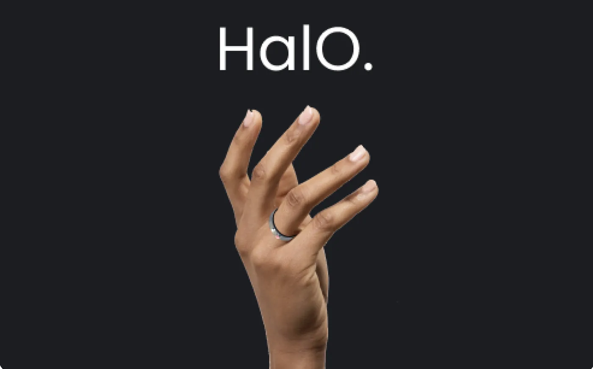
The phone was in the way.
A woman on a crowded bus may have a phone in her bag and a reason to leave it there. On a quiet walk to the market, she may have the phone in hand and weak coverage. I wanted to design for both moments, starting with what it takes to ask for help.
Understanding the users
Primary research. The project materials reference interviews but provide no participant count, interview guide or records. I use the published survey and desk research below as evidence. The personas represent scenarios I would validate with commuters in Bengaluru and Sullia.
614 valid survey responses
422 from Bengaluru and 192 from Ahmedabad. The study linked safety perceptions on buses to anxiety, bus-stop conditions and the wider travel experience.
Verma et al., Transportation Research Procedia (2020)
Infrastructure shapes the trip
The World Bank points to lighting and walkable routes in cities, and limited transport options and poor road conditions in rural areas. I treated weak coverage as a scenario to test in Sullia.
World Bank, Gender Responsive Urban Mobility in India (2022) · World Bank, Rural and Peri-Urban Roads
Global context. WHO estimates nearly one in three women have experienced physical or sexual intimate partner violence or non-partner sexual violence in their lifetime. This figure covers a broader context than commuting.
World Health Organization, global prevalence estimates
Product benchmark
invisaWear already pairs discreet jewellery with a phone over Bluetooth. My opportunity was a thumb-operated ring paired with three distinct ways to respond during a commute.
invisaWear, product and Bluetooth FAQ
The bus study is about perceived safety. I used it to select scenarios and design constraints. Whether a ring feels discreet and usable in those scenarios remains a question for primary research.
Personas
Two research-informed composites show how the same safety task changes with the commute.
Priya Sharma
27 · Marketing professional · Bengaluru, Karnataka
Takes public transport between meetings and sometimes comes home late.
Pain points. Crowded or late trips can feel unsafe. A visible panic device or taking out a phone can draw attention. Menus cost time when she wants to act quickly.
Needs. A gesture she can use with one hand, a ring she would wear as jewellery, and control over whether to call, share location or trigger SOS.
Kavitha Devi
38 · Farmer · Sullia, Karnataka
Walks to nearby markets and fields. Some stretches have few people, poor lighting and intermittent coverage.
Pain points. Help may be farther away. Coverage can drop. A tool that assumes English, confidence with apps or a multistep setup can be hard to use.
Needs. A trigger she can find by touch, setup in a language she reads, and a clear indication of what the app can send when coverage is weak.
Get someone to help me when I need it. Priya’s scenario tests discretion in a crowd. Kavitha’s tests how much the emergency interaction assumes about the phone, the network and reading under pressure.
Names, ages, jobs and scenarios are composite persona details.
Affinity Mapping
I grouped the secondary findings and persona scenarios by the moments when asking for help could break down.
Let the commuter start the alert with her hand. Have the paired phone use preselected contacts and report the state of delivery. The interaction begins before the app needs her attention.
Coping strategies are scenario hypotheses from the original empathy map.
Themes
Asking for help can be its own obstacle.
An emergency interaction can assume a free hand, a visible screen, a good connection and time to decide. A crowded commute can take away the first two. A rural walk can take away the connection. Both make the cost of extra steps apparent.
How might we design an intuitive, accessible safety solution that helps women in urban and rural areas feel more secure on their commutes, while accounting for their different needs and keeping it easy and reliable to use?
Design test. Could someone start an SOS by touch with a hand at their side? Could they tell whether help had actually been notified once they could check their phone?
Digital Solutions
I split the product around the moment when the screen becomes hard to reach.
The ring
A same-hand thumb gesture starts SOS. The ring concept can also provide light and an alarm.
The companion app
Handles setup, route planning, Fake Call, Tag Along, location sharing and alert status.
Where should the SOS start?
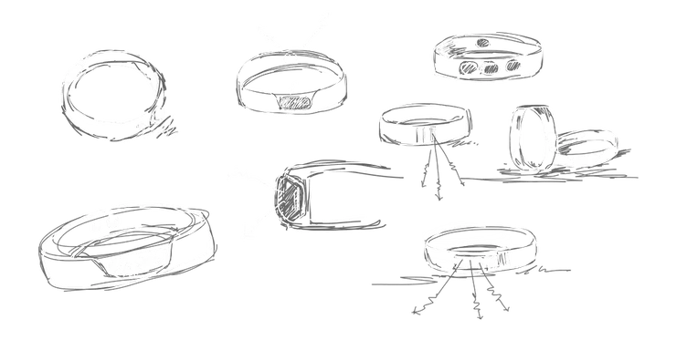
User Flow
The commuter can start on the ring or demonstrate the same hold on Home in the phone prototype.
The hold confirms intent. The countdown gives an accidental trigger a way out. A deliberate alert requires no second tap.
Live Location & Alerts
At the end of the countdown, the concept starts the local and remote actions in parallel.
Trusted contacts
Share live location through the available data channel.
Nearby HalO users
Send the proposed community alert where available.
Ring
Start the alarm and flash in the concept.
Parallel actions avoid waiting for each other. The phone and available communication channels still determine which remote actions can complete.
Ring & Trusted Contacts
Setup puts the decisions that can wait ahead of the commute.
Ring tab
Check connection, battery and trigger readiness.
Configuration. Adjust the alarm and flashlight ahead of time.
Return to ring status. Check whether the app reports that it is listening.
Emergency Contacts
See the saved recipients before you need them.
Add or remove a contact. Choose who should receive an SOS.
Return to the recipient list. Keep SOS recipients distinct from optional trip sharing.
A saved recipient list removes a decision from the SOS moment. An upfront connection check tells the commuter whether the ring and phone are ready to hand off the gesture.
Ring & SOS UI
Before leaving, the commuter can check whether the ring is paired, has charge and is listening.
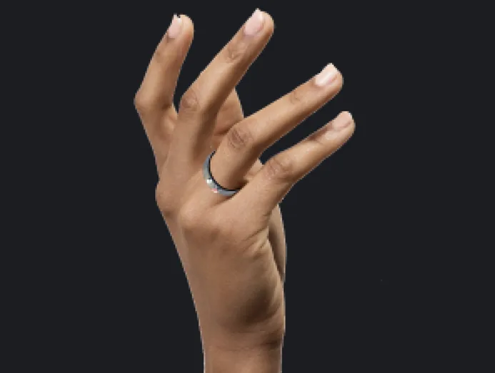
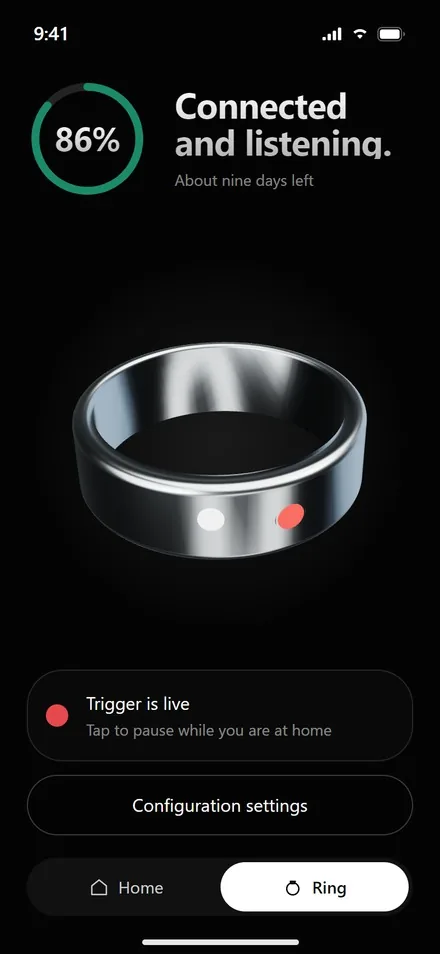
Make readiness visible
The ring page answers a different question from Home. Home is for deciding what to do next. Ring status is for checking whether the wearable is ready before you need it.
The battery and connection indicators are sample states. The prototype does not measure the ring’s radio range or battery life.
The Hold & Cancel
A bag strap can press a ring. The activation needs to feel deliberate when the user means it.
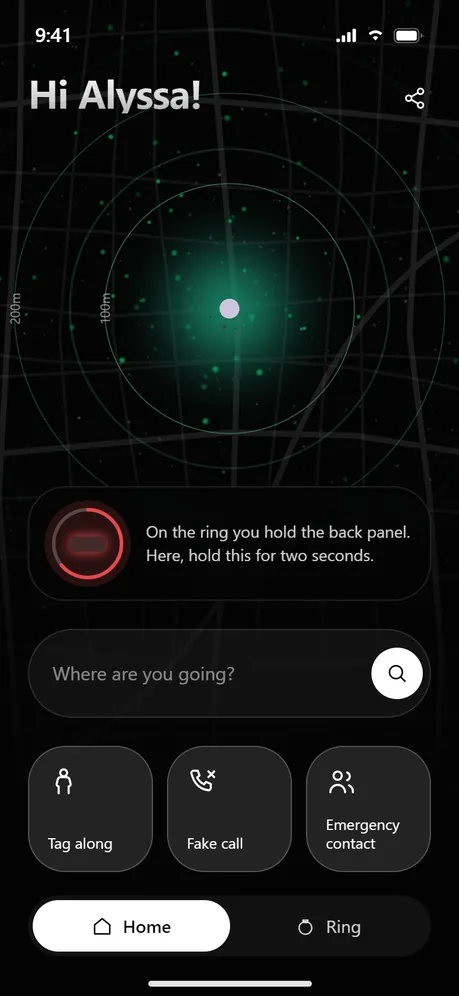
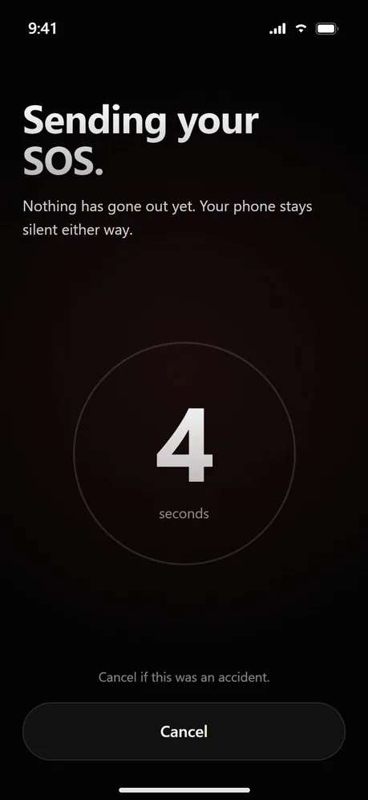
The hold is meant to filter brief contact. The cancel window gives the commuter time to recover from an accidental hold. It also delays an intentional alert. Both timings need testing on a physical ring.
The phone prototype demonstrates the timing. Whether the wearer can perceive confirmation with the phone in a bag is a hardware research question.
Active SOS & Stand-Down
Once SOS starts, the interface shifts from asking for input to showing what is happening.
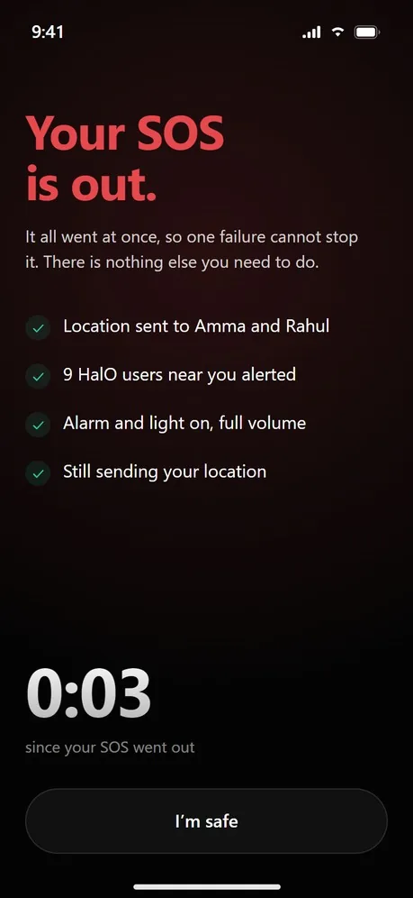
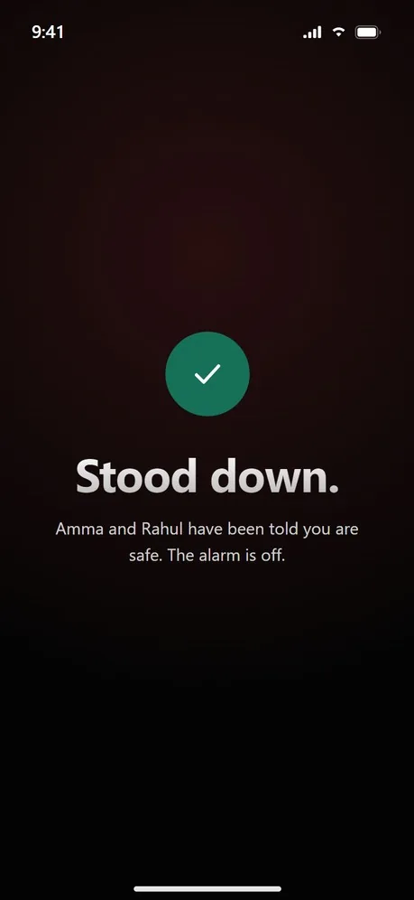
In a live system, “sending,” “sent” and “received” need distinct meanings. A green check in the demo stands in for a system event that engineering would need to verify.
The prototype simulates messages and nearby alerts. A production design would also need a way to surface failed or delayed delivery.
Configuration & Contacts
I kept settings in a part of the app the commuter can use when there is time to read and decide.
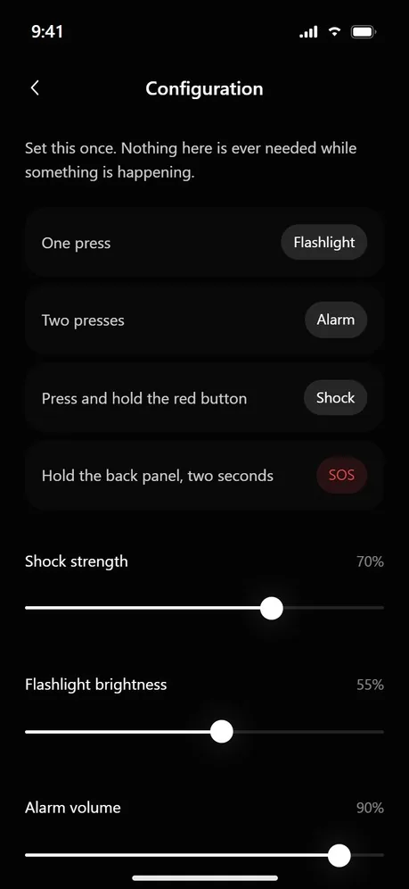
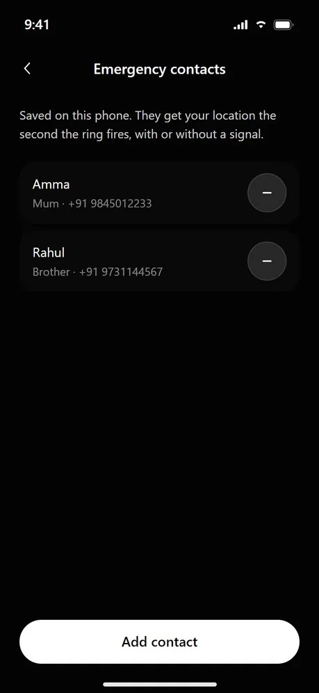
The early concept explored a deterrent and a damage-triggered alert using the last known location. The core SOS depends on the gesture and alert handoff. Any additional hardware or dispatch integration would need its own review.
The primary flow uses trusted contacts and a proposed nearby-user alert. Authority notification was an early exploration. The original contacts screen overstates coverage. Alert delivery needs data or SMS service.
User Flow
Splash leads to onboarding and then Home. From Home the commuter chooses the response that fits the moment.
The commuter can call or message in the app without exchanging phone numbers. Sharing with emergency contacts is a separate choice, and she can end the session early.
Mobile App UI
Home makes the next action easy to find. A commuter can choose Fake Call, Tag Along or SOS without moving through them in order.
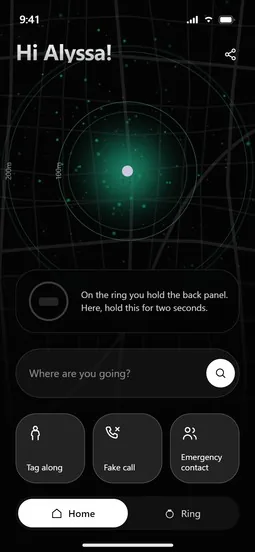
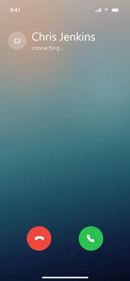
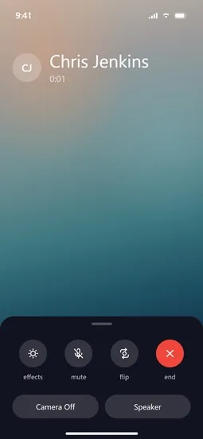
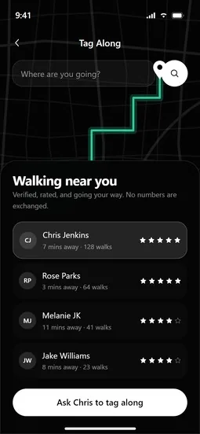
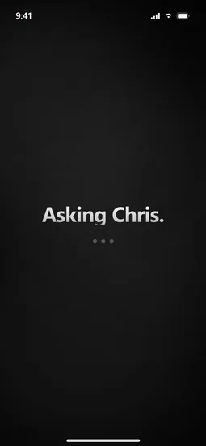
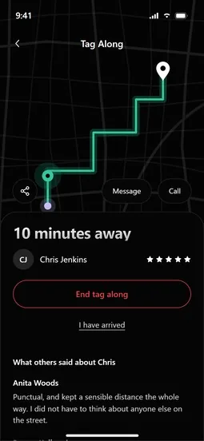
Tag Along is opt-in and scoped to the session in the concept. The sample profiles and reviews illustrate the interface. Identity checks and controls against misuse need testing before launch.
The Walk & Arrival
The commuter can share progress on her terms, end the session and leave feedback after arrival.
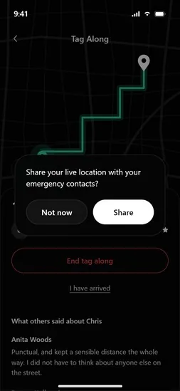
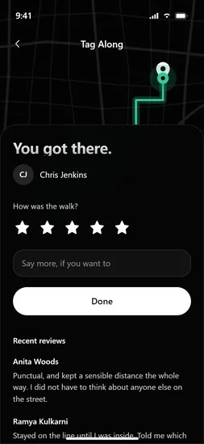
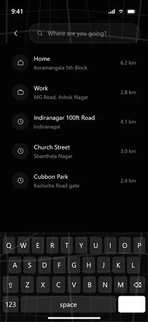
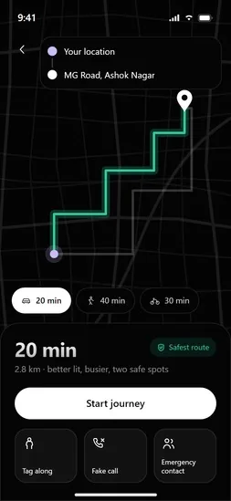
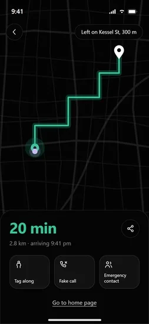
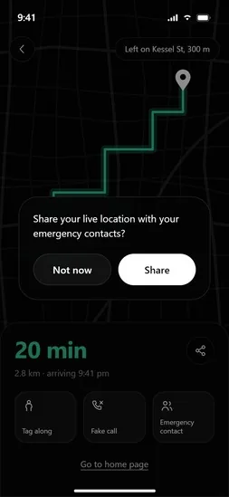
“Safest route” is a prototype label. Lighting, foot traffic and reports can change. I would test a label that explains the route factors and when the information was last updated.
Onboarding
Language comes before the welcome copy. Pairing and choosing two contacts put the critical decisions before the first commute.
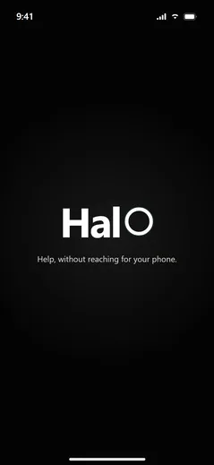
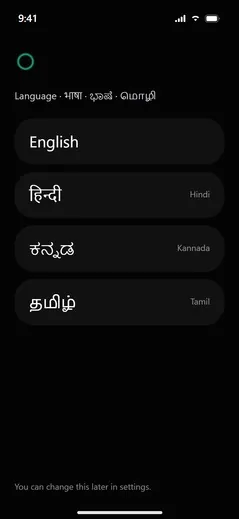
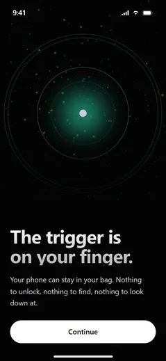
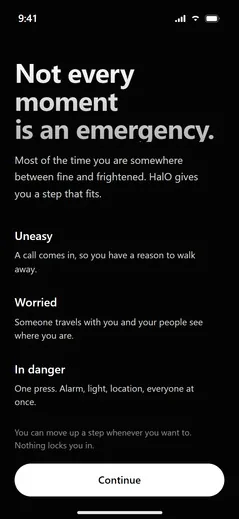
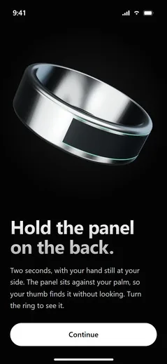
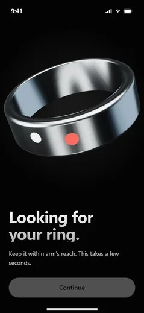
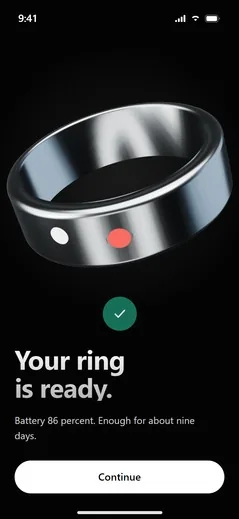
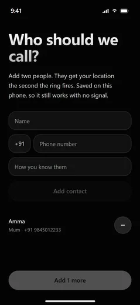
Status combines text, icons and colour. The phone hold uses visual progress and can use haptics on supported devices. The language selector is demonstrated. Translation, screen-reader behaviour, touch target size and reduced motion need verification.
Key Takeaways
The concept is a wearable and an interactive walkthrough. The next decision is whether the handoff earns enough trust to pilot.
Start with the hand.
When the phone is hard to reach, simplifying its screens only helps once the commuter can use it. The wearable moves the first action.
Make waiting visible.
A cancel window can prevent a false alarm and delay a real one. The timing should earn its place through testing.
Design for delivery.
An alert starting, an alert leaving the phone and someone receiving it are different events. Each needs a distinct status.
Run primary research.
Interview urban and rural commuters about recent journeys, language needs and what “discreet” means to them. Include trusted contacts.
Test the physical gesture.
Use a test ring, simulated scenarios and consented time pressure. Compare hold and cancel timings, including hands-busy and accidental presses.
Review privacy and reliability.
Test Bluetooth loss and intermittent service. For Tag Along and route reports, review consent, verification, misuse and stale information.
Compare phone-only and ring-triggered tasks. Record first-attempt activation without coaching, accidental sends, successful cancellations and time to confirmed receipt. Compare outcomes by commute context and connectivity. Treat every unrecognised delivery failure as a blocker to resolve.
Scope at handoff · Ring form concept, Figma designs and an interactive app walkthrough. Physical hardware, operational alerts and field outcomes remain to be validated.